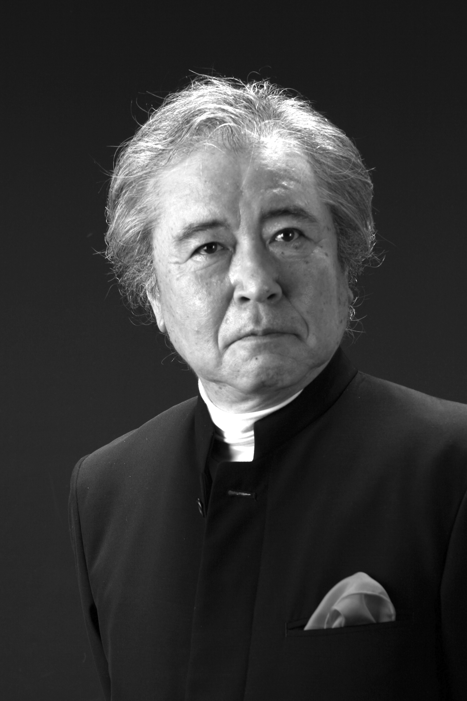

ごあいさつGreetings
霞管弦楽団 代表 金井陽奈
本日は「広島大学霞管弦楽団 2017 Spring Concert」にお越しいただきましてありがとうございます。私たち霞管弦楽団は広島大学霞キャンパスの学生を中心に構成されているオーケストラです。30年前小人数の室内楽団として誕生し、現在総勢60名ほどで活動しております。年に1度の定期演奏会に加え、霞祭でのブラスバンド演奏・アンサンブルコンサートや病院や学会でのミニコンサートなど様々な場所で演奏活動を行っています。本年度は Autumn Concert を開催しご好評を頂きました。このように種々の演奏機会をいただき、私たちの演奏を多くの方が聞いてくださることは決して当たり前ではなく、心よりうれしく思っております。
また、学内外の先生方をはじめ、OBOGの先輩方、近隣にお住いの皆様、多方面にわたる方々のご理解、ご協力のもと日々活動ができていることに深く感謝しております。この先も霞管弦楽団にかわらぬご支援をいただきますよう、どうぞよろしくお願い致します。
さて本日のプログラム、前半は、オーボエの美しいメロディーが有名なボロディン作曲歌劇「イーゴリ公」より韃靼人の踊りと、偉大なロシアの作曲家チャイコフスキーのバレエ組曲「眠れる森の美女」です。皆様もどこかで耳にされたことのある2曲をお届けします。後半は、ロシアの作曲家であるアレクサンドル・グラズノフの交響曲第5番変ロ長調です。非常に演奏機会が少ない作品ですが、全体を通して明朗で生き生きとした「響き」が感じられる曲です。
部員一同精一杯演奏致します。皆様にすこしでも素敵な時間を過ごしていただけましたら幸いです。
霞管弦楽団 顧問
広島大学医歯薬保健学研究院 心臓血管生理医学教室 教授 吉栖正生
今年も広島大学霞管弦楽団による Spring Concert の季節がやって参りました。
広島大学霞管弦楽団は、広島大学霞キャンパスにある医学部、歯学部、薬学部の三つの学部の学生が団員で、日々講義や実習で忙しく勉強するなか練習を重ねています。いつも申しておりますが、今日の医療は全ての専門職の緊密な連携が必須になっており、このネットワークは、卒業後も大きな力になると信じています。因にこの管弦楽団のホームである広島大学霞キャンパスは、元々は広島陸軍兵器補給廠で、戦後、仮の県庁舎となった後、ちょうど60年前に医学部と病院が呉から移転し、その後、目覚ましい発展をとげ、国内有数の医療系キャンパスとなっています。
本日の曲目は、ボロディン：歌劇「イーゴリ公」より韃靼人の踊り、チャイコフスキー：バレエ組曲「眠れる森の美女」、それにグラズノフ：交響曲第5番変ロ長調です。今年も齊城英樹先生に指揮をお願いしております。午後のひととき、古き良き時代のロシアの音楽を味わっていただければと思います。
今後とも、広島大学霞管弦楽団への御支援のほど、宜しくお願い申し上げます。
指揮者Conductor

指揮者 齊城英樹
国内外でオペラ、コンサート指揮者として活動している。
「多くの才能を与えられた指揮者」「作品の深部に迫る指揮者」等、海外新聞評でも称賛されている。オペラではルーマニア三大歌劇場のひとつ国立ヤシ歌劇場においてモーツァルト「フィガロの結婚」で成功を収め、以来客演指揮者として「マダム・バタフライ」「ラ・ボエーム」「トスカ」「カルメン」「道化師」「カヴァレリア・ルスティカーナ」「イル・トロヴァトーレ」「愛の妙薬」等々数多く指揮している。2004年広島オペラアンサンブルとヤシ歌劇場の共同制作オペラ Buddha を指揮し、同歌劇場初の邦人作品上演を成功させる。
国内においても古典から現代まで幅広いレパートリーを持ち、初演を含め多くの作品を手がけている。
コンサート指揮者としてはルーマニア国立ボトシャニ・フィル及びオラディア交響楽団の定期公演でベートーヴェン、ブラームス、ショスタコーヴィチ、プロコフィエフ等の演奏で高い評価を得る。またモルドヴァ・フィルや同オーケストラメンバーによる室内オーケストラの演奏にも評価は高い。レクイエムインヒロシマでは古典から現代まで数々のレクイエムを指揮。エリザベト音楽大学中退。レスピーギ音楽院、及びマスタープレイヤーズ・アカデミーでディプロマ取得。
指揮を山岡重信、山田一雄、イタリア、スイス、ルーマニアに於いてM・アッツモン、M・エルデリ、R・シューマッハ、C・カリストルの各氏に学ぶ。
プログラムProgram
-
A.ボロディン
Aleksandr Borodin
弦楽四重奏曲第2番 第3楽章
（約9分）
String Quartet No.2 - 3rd mov.
-
-
A.ボロディン
Aleksandr Borodin
歌劇「イーゴリ公」より韃靼人の踊り
（約12分）
Polovtsian Dances from “Prince Igor”
-
P.チャイコフスキー
Pyotr Tchaikovsky
組曲「眠れる森の美女」
（約25分）
“The Sleeping Beauty” Suite
- 序奏 - リラの精
- アダージョ パ・ダクシオン
- パ・ド・キャラクテール：長靴をはいた猫と白い猫
- パノラマ
- ワルツ
-
-
A.グラズノフ
Aleksandr Glazunov
交響曲第5番 変ロ長調
（約35分）
Symphony No.5 in B-flat major
- Moderato maestoso - Allegro
- Scherzo. Moderato
- Andante
- Allegro maestoso - Animato
解説Program Notes
歌劇「イーゴリ公」より韃靼人の踊り
A.ボロディン
「韃靼人の踊り」はロシアの作曲家ボロディンの代表作。もともと歌劇「イーゴリ公」の中の一曲であったが、今日では単体で演奏されることが多い。管弦楽版だけでなく、吹奏楽版や金管バンド版にもアレンジされており様々な演奏形態で演奏される。
歌劇「イーゴリ公」とは、12世紀の英雄物語をもとに作られたオペラで、ロシアの英雄イーゴリ公が侵略者のポロヴェッツ人と戦った物語である。その物語の一幕で、ポロヴェッツ人の捕虜となったイーゴリ公が、ポロヴェッツ人たちに踊りを見せられる場面が、この「韃靼人の踊り」なのだ。ちなみに“韃靼人”と“ポロヴェッツ人”は別の民族であるが、題名が日本語訳された時に騎馬民族であることをイメージしやすいように“韃靼”が採用されたようだ。最近では、原題どおり「ポロヴェッツ人の踊り」とされることもある。
曲は、広大なロシアの草原を思わせる序曲から、奴隷にされた娘たちの嘆きを歌った「娘たちの踊り」へと続く。オーボエとコールアングレのソロが哀愁ただよう旋律を奏でる。
「娘たちの踊り」が終わると一転して、激しい「男たちの踊り」が始まる。クラリネットの技巧的なソロはこの曲の聴きどころの一つだ。この激しさを受け継ぐように3拍子の「全員の踊り」が始まる。ポロヴェッツ人たちの首領であるコンチャーク・ハンを讃える力強い歌と、奴隷となった人々の抑圧された旋律が交互に繰り返される。
次に、跳ねるような「少年たちの踊り」が始まる。間には激しい「男たちの踊り」が挟まれている。ここでは、ホルンのゲシュトップが聴きどころだ。ゲシュトップとはホルンの特殊奏法の一つで、右手で楽器のベルを完全に密閉することで鋭い金属音を得ることができる。
再び「娘たちの踊り」が登場するが、同時に「少年たちの踊り」も登場する。この次には、「少年たちの踊り」と「男たちの踊り」が登場する。このように、これまでのテーマが合わさって登場することでエンディングへと曲が進んで行く。
最後は華やかに「全員の踊り」で曲が締めくくられる。
余談ではあるが、ボロディンは純粋に作曲家として生活していたわけではない。彼はサンクトペテルブルグ大学医学部の教授であり、作曲家はいわば副業のようなものであった。そのためか、作曲の際には他の作曲家の手を借りてオーケストレーション(各々の楽器に音を割り振ること)をしていたようだ。手助けをしていた作曲家の中には、今回の定期演奏会のメイン曲である交響曲5番を作曲した、アレクサンドル・グラズノフも含まれている。ロシアの響きを感じていただければ幸いである。
組曲「眠れる森の美女」
P.チャイコフスキー
舞台は16世紀ヨーロッパ、フロレスタン14世が治める平和な王国。待ち望んだ王女オーロラ姫の誕生に、国中が祝福の喜びに包まれていた。しかし邪悪な妖精カラボスは、オーロラ姫の誕生を祝う式典に招かれなかったことに怒り、姫に恐ろしい呪いの言葉をかける。「姫は16歳の誕生日に糸紡ぎの針で指を刺し死ぬだろう」と。突如降りかかった不吉な死の呪いに恐怖する城内に、今度はリラの花の精の澄んだ声が響く。「姫は死ぬ代わり100年の眠りにつく。そして一人の王子の接吻により目覚めるだろう」――
1888年5月、当時ペテルブルク帝室劇場の総裁であった文化官僚フセヴォロジスキーは、フランスの童話作家ペローの有名な物語「眠れる森の美女」に着想を得た大作バレエの台本をチャイコフスキーに送った。このころ交響曲第5番（作品64）を手がけていたチャイコフスキー (Tchaikovsky, Pyotr Ilyich 1840-1893) は台本を読んで非常に感銘を受け、当時のバレエ界でトップの座にあったフランス人老振付師プティパとの共同作業により作曲を進めた。翌年5月に完成した音楽は交響曲のように全体が調和したスケールの大きなもので、帝政ロシアが威信をかけ注力したこの壮大なバレエにふさわしいものであった。バレエは1890年1月にペテルブルクのマリンスキー劇場で初演され、その後時が経つとともに不動の名声を獲得するところとなった。
この3時間以上におよぶ大作をもとに、コンサートで演奏できる組曲形式の作品を構成する考えは当初チャイコフスキーにもあった。バレエ全体を一つの調和の取れた大作として書いたためか、その中から数曲だけを選りすぐることは作曲者当人にとっては難しかったらしく、チャイコフスキーは編曲家のジロティに組曲を委ねる手紙を書いている。しかしチャイコフスキーはジロティが提案した組曲のメモを紛失してしまい、以後は他の者からの代替案も「寄せ集め風」だと退けてしまったため、この曲が演奏会用組曲として出版されることはなかった。チャイコフスキーの死後、ジロティの協力により最初の提案が復元され、全5曲からなる本組曲が世に知られることとなった。
第1曲 序奏 - リラの精
バレエのオープニング。悪の精カラボスの衝撃的な登場に続き、闇に輝く一条の光のような善の精リラの主題が対比される。リラの主題は次第に輝きを増し大きなクライマックスに至る。最後は眠る王女とともに、城全体が100年の眠りを象徴する森へと変容していく。
第2曲 アダージョ パ・ダクシオン
第1幕より。16歳の誕生日を迎えたオーロラ姫が、求婚のため異国から訪れた4人の王子と踊り、バラの花束を受け取る。優雅と気品を備えた女性へと成長した王女の、絢爛たる踊りの場面である。
第3曲 パ・ド・キャラクテール：長靴をはいた猫と白い猫
第3幕より、目覚めたオーロラ姫とデジレ王子の結婚を祝う祝賀の場。童話のキャラクターである2匹の猫の踊りが、オーボエとコーラングレでユーモラスに表現されている。第3幕では他にも赤ずきんと狼、シンデレラ、青い鳥など童話のキャラクターが登場し、オーロラ姫の結婚を祝う。
第4曲 パノラマ
第2幕より。リラの精の導きにより、デジレ王子を乗せた真珠貝の舟は森を抜け、姫の眠る城へと静かに進んでゆく。森の中を音もなく滑るように進む舟、そして姫の眠る城に近づくにつれて少しずつ移り変わる森の情景が描写されている。チャイコフスキーがバレエ全作を通じて一際気に入っていた幻想的な場面である。
終曲 ワルツ
第1幕より。オーロラ姫の16歳の誕生日、庭園で若者たちが花を手に舞い踊る。流麗なメロディラインが非常に有名で、1959年のディズニー映画『眠れる森の美女』では「いつか夢で Once Upon a Dream」として歌われている。華やかさと繊細な美しさのある夢見るような曲想のワルツで、ロマンチスト・チャイコフスキーの本領が遺憾なく発揮されている。
交響曲第5番 変ロ長調
A.グラズノフ
グラズノフ（Glazunov, Aleksandr Konstantinovich 1865-1936）はロシア帝国末期およびソビエト連邦建国期の作曲家、音楽教師そして指揮者である。サンクトペテルブルクの富裕な出版業者の家庭に生まれ、9歳でピアノの、13歳で作曲の学習を始めた。ロシア五人組のかつての指導者バラキレフは、グラズノフ青年の才能を認め、その作品をリムスキー゠コルサコフに注目させた。「バラキレフは、14歳か15歳の高校生の作品を、何気なく私のところに持ってきた。それがグラズノフの曲だった。あどけない手法で作曲された管弦楽曲だった。青年の才能は疑いようもなく明らかであった」とリムスキー゠コルサコフは回想している。
グラズノフは、ロシア楽壇における民族主義（ペテルブルク楽派）と国際主義（モスクワ楽派）を巧みに融和させた点において重要な役割を果たしている。グラズノフはバラキレフの国民楽派の直系であり、その作品ではロシア国民楽派を受け継いだ民族主義を基調としつつ、チャイコフスキーの流れを汲むロシア・ロマン主義と融和させた作曲様式が認められる。前者からは色彩的で華麗な管弦楽法や豊かな和声法を、後者からは抒情的な旋律と洗練された優雅な表現を取り入れている。また、後年「ロシアのブラームス」との異名をとったように、年を経るにつれて、対位法的な構想や、綿密な構築性、変奏の技法の援用といった特徴が強まった。
本日演奏する交響曲第5番は1895年4月から10月にかけて作曲された。この作品で、3楽章構成であった交響曲第4番から再び伝統的な4楽章構成に戻っているものの、主題の推移は回避されている。「英雄」との別名を持つように、全般的に明朗な性格と鮮やかな生命力が漲っており、グラズノフ自身、この作品を「沈黙の響き」「詩の建築」と評した。
第1楽章 Moderato maestoso – Allegro
変ロ長調、4/4拍子。
ブラームス風の重厚で勇壮な楽章であり、中低音の堂々たる開始は、この作品の風格を暗示するものであり、聴き手の期待を膨らませる。併せてこの旋律は第1主題を予告するものとなっており、次第に加速を加えていくことで、主部へと移る。
第2楽章 Scherzo. Moderato
ト短調、2/4拍子。
木管の細かな動きにトライアングルを加え、輝きを出している。トリオは、濃厚な民謡調となっており、ハープに弦のピチカートを巧みに絡ませるなど、管弦楽の扱いにメンデルスゾーンのそれを想わせる芸の細やかさが感じられる。
第3楽章 Andante
変ホ長調、6/8拍子。
シューマン風の内向的で感傷的な緩徐楽章となっており、舟歌風の旋律が流れる。中間部の金管楽器が沈痛さを物語る。
第4楽章 Allegro maestoso
変ロ長調、2/2拍子。
冒頭から総奏で賑やかに開始され、祝祭的な雰囲気につつまれる。民俗音楽に特徴的な旋律やリズムが素材に使われており、にわかに民族調をかもし出している。ロシアの祭りを連想するもので力の限り楽器が鳴らされ、轟く音響の渦の中終結へと導く。
幹部紹介Officers
技術委員会
- 部長
- 金井 陽奈
- 副部長
- 奥﨑 体
- コンサート・マスター
- 平岡 敬一
- コンサート・ミストレス
- 稲葉 えり
- 近藤 紗矢
- 学生指揮者
- 松本洋一郎
- 上田 智也
- 頼近 恭典
- セクションリーダー
- 山口 栞（弦楽器）
- 森川みなみ（木管楽器）
- 加藤 秀範（金管楽器）
- 林 いずみ（打楽器）
運営部
- 部長
- 金井 陽奈
- 副部長
- 奥﨑 体
- 会計
- 山本 彩乃
- ステージ
- 小久保結未
- 広報
- 近藤 紗矢
- 主務
- 藤井 愛弓
- イベント
- 渡辺 詩織
- パートリーダー
- 瀧本 朋代（ヴァイオリン）
- 益田 裕司（ヴィオラ）
- 西尾 隆史（チェロ）
- 波多野由理（コントラバス）
- 森川みなみ（フルート）
- 久保田千貴（オーボエ）
- 福原 真由（クラリネット）
- 大内 徳子（ホルン）
- 福原 ゆい（トランペット）
- 頼近 恭典（トロンボーン）
- 泉 亮介（テューバ）
- 竹田 茉由（パーカッション）
出演者Performers
- ヴァイオリン
- 稲葉 えり（歯5）
- 大可 直哉（医5）
- 章 浩博（医5）
- 平岡 敬一（医5）
- 近藤 紗矢（医4）
- 堀江 航（医4）
- 山本 彩乃（薬4）
- 若松 海燕（歯4）
- 瀧本 朋代（薬3）
- 山田 菜央（医3）
- 遠藤 正也（薬2）
- 川田 忠文（看護2）
- 土ヶ内悠人（OB）
- 山田 桜（OG）
- 石川 藍子（賛助）
- 齋藤 紘希（賛助）
- 白石百合子（賛助）
- 杉村健太郎（賛助）
- 隅田 寛（賛助）
- 中村 夏実（賛助）
- 和田光太郎（賛助）
- ヴィオラ
- 張 越（医5）
- 鵜飼 翔一（医4）
- 益田 裕司（薬3）
- 山口 栞（看護3）
- 長尾 知美（看護2）
- 三井 優果（医2）
- 久保 怜香（OG）
- 内野 翔太（賛助）
- 大河内知世（賛助）
- チェロ
- 松本洋一郎（医5）
- 奥﨑 体（医4）
- 西尾 隆史（薬科3）
- 小早川明星（薬科2）
- 野口 詩乃（OG）
- 岡田 浩司（賛助）
- 大心池摩耶（賛助）
- コントラバス
- 井上 和子（医5）
- 波多野由理（薬3）
- 長岡 真実（医2）
- 今川 大樹（賛助）
- 奧明 博士（賛助）
- フルート
- 森田 智子（医5）
- 金井 陽奈（医4）
- 藤井 愛弓（歯4）
- 藤井 泰斗（医4）
- 森川みなみ（薬科3）
- 光野 萌（医2）
- オーボエ
- 中本 尚希（医5）
- 松島 彩子（医5）
- 久保田千貴（医2）
- クラリネット
- 小久保結未（医4）
- 塩野かすみ（看護3）
- 福原 真由（看護3）
- 岩本 奈々（看護2）
- 山田 息吹（医2）
- ファゴット
- 青山雄一郎（OB）
- 山田 裕己（賛助）
- ホルン
- 大内 徳子（口工3）
- 加藤 秀範（医3）
- 濱内なつき（口保2）
- 横山茉由佳（口保2）
- 吉山 紗代（OG）
- トランペット
- 山口 瑞生（医5）
- 上田 智也（歯4）
- 畠山 理恵（歯4）
- 福原 ゆい（理療3）
- 古賀 愛華（看護2）
- 渡邉萌々香（作療2）
- トロンボーン
- 佐藤 真由（医5）
- 頼近 恭典（医3）
- 田村 和也（賛助）
- チューバ
- 泉 亮介（医3）
- パーカッション
- 渡辺 詩織（医4）
- 竹田 茉由（口保3）
- 林 いずみ（歯3）
- 掛田 雄基（薬2）
- ハープ
- 髙橋 智代（賛助）
-
-
◆：コンサート・マスター ◇：コンサート・ミストレス ○：パートリーダー